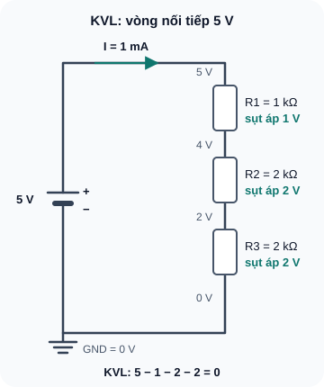
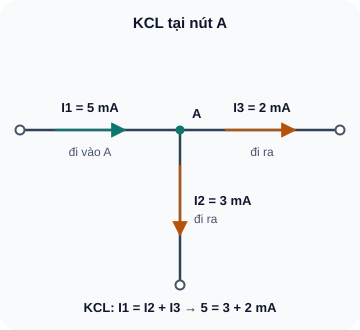
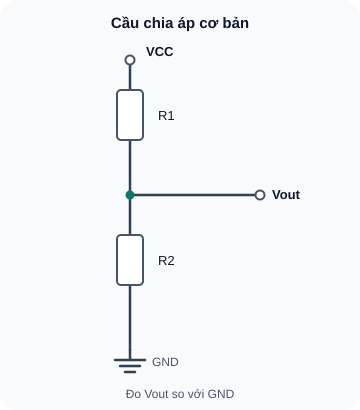
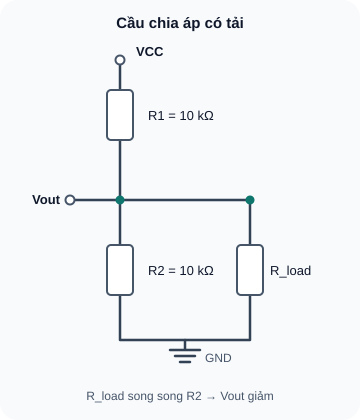
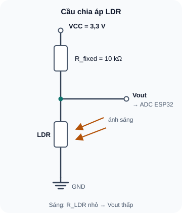

Cầu Chia Áp, KVL & KCL
Ba công cụ phân tích mạch quan trọng nhất — nền tảng để debug và thiết kế bất kỳ mạch điện nào.
- Phát biểu và áp dụng KVL (Kirchhoff's Voltage Law)
- Phát biểu và áp dụng KCL (Kirchhoff's Current Law)
- Tính toán cầu chia áp (voltage divider) cho bất kỳ cặp R nào
- Hiểu tại sao cầu chia áp bị "sụt áp" khi nối tải (loading effect)
- Ứng dụng cầu chia áp: đọc cảm biến LDR, NTC thermistor
- Xác nhận KVL và KCL bằng đo thực tế
- Debug mạch bằng KVL: tìm điểm hở từ điện áp đo được
Dụng cụ
| Tên | Thông số | SL |
|---|---|---|
| Điện trở 10 kΩ | ¼W, ±5% | 4 |
| Điện trở 4,7 kΩ | ¼W, ±5% | 2 |
| LDR (quang trở) | 5mm, GL5516 hoặc tương đương | 1 |
| Nguồn 5V | Adapter USB | 1 |
| Breadboard + jumper | — | 1 bộ |
| Multimeter | DCV | 1 |
1. KVL — Kirchhoff's Voltage Law (Định luật điện áp Kirchhoff)
KVL phát biểu: Tổng đại số các điện áp xung quanh một vòng kín bất kỳ trong mạch bằng 0. Nói cách khác, tổng điện áp nguồn bằng tổng điện áp rơi trên tất cả các tải trong vòng đó.
KVL xuất phát từ nguyên lý bảo toàn năng lượng: nếu đi theo một vòng kín từ điểm A quay lại điểm A, tổng thay đổi thế năng phải bằng 0 (bạn trở về cùng mức thế năng ban đầu).
Ví dụ áp dụng KVL — Mạch 3 điện trở

Đọc mô tả D06-1
Nguồn 5 V nối tiếp R1 = 1 kΩ, R2 = 2 kΩ, R3 = 2 kΩ rồi về GND. Dòng một nhánh 1 mA; sụt áp 1 V, 2 V, 2 V; 5 − 1 − 2 − 2 = 0.
KVL rất hữu ích khi debug. Nếu bạn đo V_R1 = 0V và V_R2 = 5V trong mạch 2 điện trở nối tiếp, điều này cho thấy R1 = 0Ω (ngắn mạch) hoặc R2 = ∞Ω (hở mạch tại R2). KVL cho bạn biết điện áp "đang kẹt ở đâu" trong mạch.
2. KCL — Kirchhoff's Current Law (Định luật dòng điện Kirchhoff)
KCL phát biểu: Tổng đại số các dòng điện tại bất kỳ node (nút) nào trong mạch bằng 0. Nói đơn giản: tổng dòng chạy vào node bằng tổng dòng chạy ra khỏi node.
KCL xuất phát từ nguyên lý bảo toàn điện tích: điện tích không thể tích lũy (hay biến mất) tại một điểm trong mạch.

Đọc mô tả D06-2
Dòng I1 = 5 mA đi vào nút A. Hai dòng đi ra: I2 = 3 mA xuống dưới và I3 đi sang phải. KCL cho I3 = 5 − 3 = 2 mA.
3. Cầu chia áp — Voltage Divider
Cầu chia áp là mạch gồm 2 điện trở mắc nối tiếp giữa nguồn và GND, lấy điện áp đầu ra tại điểm giữa. Đây là một trong những cấu trúc mạch được dùng nhiều nhất trong điện tử analog: đọc cảm biến, thiết lập điểm làm việc transistor, tạo điện áp tham chiếu.

Đọc mô tả D06-3
VCC nối tiếp R1 rồi R2 xuống GND. Điểm giữa R1 và R2 là Vout, đo so với GND.
Ví dụ tính toán 1 — Cầu chia áp
Cho: V_in = 5V, R1 = 10 kΩ, R2 = 10 kΩ
V_out = 5 × 10000 / (10000 + 10000) = 5 × 0,5 = 2,5V
Trực giác: R1 = R2 → điểm giữa ở đúng giữa → V_out = V_in / 2 ✓
Ví dụ tính toán 2 — Chọn R để có V_out mong muốn
Bài toán: Thiết kế cầu chia áp từ 5V để ra 2V. Cho R2 = 10 kΩ. Tìm R1.
Từ công thức: V_out = V_in × R2 / (R1 + R2)
→ 2 = 5 × 10000 / (R1 + 10000)
→ R1 + 10000 = 5 × 10000 / 2 = 25000
→ R1 = 25000 – 10000 = 15 kΩ
Chọn R1 = 15kΩ (E24: 15kΩ có sẵn). Kiểm tra: V_out = 5 × 10k/(15k+10k) = 5 × 0,4 = 2V ✓
3.1 Loading Effect — Hiệu ứng tải làm sụt áp đầu ra
Khi nối một tải (load) vào V_out của cầu chia áp, tải này mắc song song với R2. Điện trở tương đương R2 || R_load nhỏ hơn R2 → V_out giảm xuống so với tính toán. Đây là loading effect (hiệu ứng tải).

Đọc mô tả D06-4
VCC qua R1 = 10 kΩ tới Vout. Từ Vout xuống GND có R2 = 10 kΩ song song với R_load.
Để loading effect của tải thuần trở không đáng kể (<1%): R_load ≥ 100 × (R1 || R2). Ví dụ: cầu chia áp R1=R2=10kΩ có trở kháng Thévenin 5kΩ; tải thuần trở cần ≥500kΩ theo xấp xỉ này. ADC SAR của ESP32 không thể thay bằng một điện trở vào cố định 1MΩ: tụ lấy mẫu, thời gian ổn định, mức attenuation và hiệu chuẩn ảnh hưởng phép đo. Kiểm hướng dẫn ADC của đúng chip/board và đo lại với cầu chia áp thực tế; Espressif ADC FAQ.
4. Ứng dụng: Cầu chia áp đọc cảm biến LDR
LDR (Light Dependent Resistor — quang trở) là điện trở thay đổi giá trị theo cường độ ánh sáng. Trong bóng tối: R_LDR ≈ 1 MΩ. Dưới ánh sáng mạnh: R_LDR ≈ 1–10 kΩ.
Bằng cách kết hợp LDR vào cầu chia áp với một điện trở cố định R, ta chuyển đổi sự thay đổi điện trở (khó đo) thành sự thay đổi điện áp (dễ đo bằng ADC). Đây là nguyên lý của hầu hết giao diện cảm biến điện trở.

Đọc mô tả D06-5
3,3 V qua R_fixed 10 kΩ tới nút Vout, rồi LDR xuống GND. Vout đi tới đầu vào ADC của ESP32. Trời sáng R_LDR nhỏ nên Vout thấp.
5. Thực hành: Xác nhận KVL, KCL và cầu chia áp
Lắp mạch: 5V → R1(10kΩ) → R2(10kΩ) → GND trên breadboard.
Đo điện áp: V_supply (hai đầu nguồn), V_R1 (hai đầu R1), V_R2 (hai đầu R2).
Kiểm tra: V_R1 + V_R2 = V_supply (KVL). Ghi sai số.
Nếu V_out nối ADC ESP32 như sơ đồ D06-5, chỉ cấp phân áp từ 3,3V: 3,3V → R_fixed(10kΩ) → V_out → R_LDR → GND. Đo V_out tại điểm giữa. Biến thể cấp 5V chỉ để đo bằng multimeter độc lập; tuyệt đối không nối V_out 5V vào GPIO/ADC ESP32.
Che LDR bằng tay (tối): đo V_out. Ghi kết quả.
Chiếu đèn pin vào LDR (sáng): đo V_out. Ghi kết quả.
So sánh hai giá trị. LDR nào ở trên (R_fixed hay R_LDR) quyết định V_out tăng hay giảm khi có ánh sáng?
| Điều kiện | V_out (V) | R_LDR ước tính (kΩ) | Nhận xét |
|---|---|---|---|
| Bóng tối hoàn toàn | _____ | _____ | — |
| Ánh sáng phòng bình thường | _____ | _____ | — |
| Chiếu đèn pin trực tiếp | _____ | _____ | — |
Tính R_LDR ước tính từ V_out: Từ công thức V_out = V_in × R_LDR / (R_fixed + R_LDR), ta suy ra:
R_LDR = R_fixed × V_out / (V_in – V_out)
6. Debug với KVL
Khi mạch không hoạt động, đo điện áp tại từng điểm từ nguồn đến GND. Gọi các điểm là A, B, C... KVL sẽ cho bạn biết "điện áp đang bị kẹt ở đâu":
- Nếu V_A = V_supply và V_B = 0V trong khi R1 nằm giữa A và B → R1 hở mạch (toàn bộ điện áp rơi trên R1 hở)
- Nếu V_A = V_supply và V_B = V_supply → có ngắn mạch tại điểm nào đó sau B
- Theo dõi điểm điện áp "nhảy" đột ngột → đó là điểm lỗi
A1: V_out = 9 × 6800 / (3300 + 6800) = 9 × 6800/10100 = 9 × 0,673 = 6,06 V
A2: 1,65 = 3,3 × 4700/(R1+4700) → R1+4700 = 3,3×4700/1,65 = 9400 → R1 = 4,7 kΩ (R1=R2 vì V_out = V_in/2)
A3: R2||R_load = 10k||10k = 5kΩ. V_out = 5 × 5k/(10k+5k) = 5/3 = 1,667V. Sai lệch = (2,5-1,667)/2,5 × 100% = 33,3% — loading effect rất lớn!
A4: R_LDR = R_fixed × V_out / (V_in – V_out) = 10000 × 2,1 / (3,3 – 2,1) = 21000/1,2 = 17,5 kΩ
A5: KCL: I_vào = I_ra → 8mA = 3mA + I_3 → I_3 = 5 mA ra khỏi node A